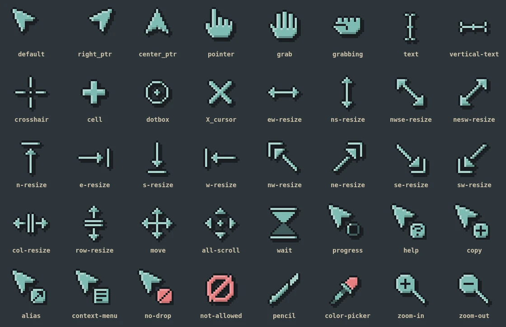

Omarchy Pixel Cursors
Animated 8-bit cursors that take their colors from your theme. Switch themes and the cursor rebuilds itself to match.
- Three styles: accent, light or dark body.
- Animated hourglass and spinning progress ring.
- Pixels stay square at any display scale.
- Pick style and size from Omarchy menu, Style > Cursor.
Install
curl -fsSL https://cursors.farzadhayat.dev/install | bashTry them in your browser Source on GitHub for Omarchy Pixel Cursors